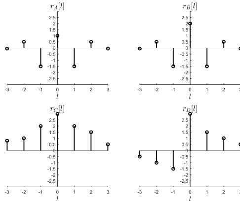
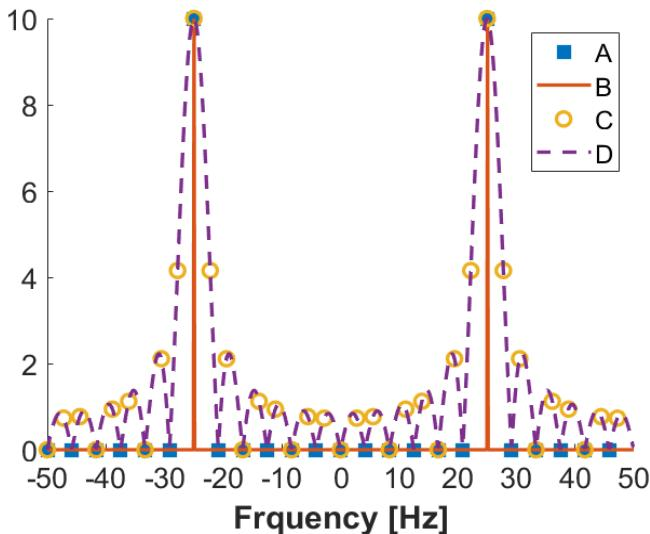
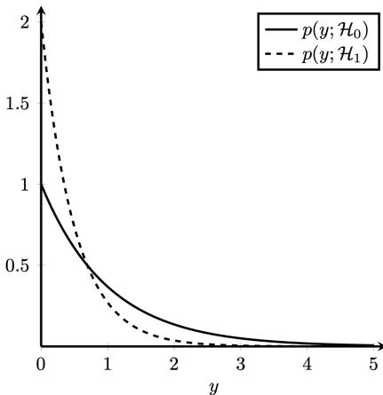

The written exam is four recycled methods with new numbers. Learn each method on one real question here, then sit two papers under time. The marking keys are at the bottom, after the methods. Do not start by reading the keys.
Four exercises, three hours, total 10. Spectra is usually the fattest (about 3 points). After January 2019, every multiple choice has exactly one correct circle, and those questions sit inside all four blocks rather than in a separate Q1. January 2019 was the old style: four MC in Q1, one or two letters allowed, −0.25 per extra wrong letter. Ignore that rule unless you sit that paper.
They grade formulation and order. A correct number with no likelihood written is not full marks. Every year you shade a plot or fill a table in detection, often in spectra too.
Aids: one A4, both sides, typed or handwritten, plus a calculator and a dictionary. The 2026–27 study guide does not promise a provided formula sheet. Write your own; see the A4 page.
| Paper | Why sit it | Key |
|---|---|---|
| Nov 2022 | Current split 1.5 / 2.75 / 3 / 2.75. Closest to what you will get. | none · derived below |
| Jan 2022 resit | Same exam as the Jan 2020 resit, so you can actually mark it. | Resit 2020 solutions |
| Nov 2019 | Correlogram + AR(2) with official numbers. Energy detector. | two keys; 1a conflicts |
| Jan 2020 | The only 5-exercise paper. Least squares / Gauss–Newton live here. | oldexams |
| Practice Oct 2021 | Virus Bayes (37%). ARMA(1,1) with \(r[0]=28/27\). PMFs printed on the sheet. | Q&A slides; 1f missing |
| Jan 2019 retake | erf table. Exponential MLE. 2-tap Wiener is legacy: skip Q4 as a model of 2026. | oldexams |
Do not count the 2020 resit and the 2022 resit as two different papers. They are the same exam. Practice Q3 is also SLT6 2025–26 question 6.2. January 2019 Q3 is SLT7 7.1.
Write the likelihood, the Yule–Walker 2×2, and the inequality direction of the LRT on the script. Those three lines are what they mark, not the final boxed number alone.
You are given how the data look if a cause is true (sensitivity, pass rate of a machine). You are asked how likely the cause is, given the data. Those are not the same number. Bayes unswaps them. The distractors are always the sensitivity, or \(P(\text{data})\) with no cause.
Name the events before you touch a calculator. \(A\) is what you observed. \(B\) is the hidden cause. The second term in the denominator is the whole point: the data can also happen when \(B\) is false.
Practice exam · 28 Oct 2021 · 1a · 0.5 pt · one correct
A virus has infected 1.8% of a population. A test detects this virus 95% of the time when it is actually present, but it returns a false positive 3% of the time when the virus is not present. If a person selected at random from this population tests positive for the virus, what is the probability that this person is actually infected? Please round to the nearest percent.
Let \(B=\) infected, \(A=\) positive. Then \(P(B)=0.018\), \(P(B^c)=0.982\), \(P(A\mid B)=0.95\), \(P(A\mid B^c)=0.03\).
$$ P(B\mid A) =\frac{0.95\cdot 0.018}{0.95\cdot 0.018+0.03\cdot 0.982} =\frac{0.0171}{0.0171+0.02946} \approx 0.367 $$Official: b) 37%. Option c is the sensitivity \(P(A\mid B)\). That is the trap. In 10 000 people, about 180 are infected and 171 of those test positive. About 9 820 are healthy and 295 of those still test positive. Most of the positives are healthy. Rare disease, noisy test: the false-positive pile wins.
Written exam · 20 Jan 2020 · Q2 · 2 pt
A car production company has three machines \(M_1\), \(M_2\), and \(M_3\) for painting cars. It has been observed that 85% of the cars painted by \(M_1\) pass the quality test, while for machines \(M_2\) and \(M_3\) the percentages of a car passing the quality test are 92% and 60%, respectively. Each day, machine \(M_1\) paints 30 cars, \(M_2\) paints 45 cars, and \(M_3\) paints 25 cars. All the cars are mixed at random before quality control.
100 cars a day. Priors \(P(M_1)=0.30\), \(P(M_2)=0.45\), \(P(M_3)=0.25\). Let \(A=\) pass. Then \(P(A\mid M_1)=0.85\), \(P(A\mid M_2)=0.92\), \(P(A\mid M_3)=0.60\).
(a) is the denominator of Bayes, i.e. total probability:
$$P(A)=0.30\cdot 0.85+0.45\cdot 0.92+0.25\cdot 0.60=0.255+0.414+0.150=0.819.$$(b) is the posterior for the worst machine:
$$P(M_3\mid A)=\frac{0.25\cdot 0.60}{0.819}=\frac{0.150}{0.819}=0.18.$$Official: \(0.819\) and \(0.18\). If you skip (a) and divide \(0.60\) by something else, you lose both points.
Resit · 24 Jan 2022 (same as resit 24 Jan 2020) · 1a · 0.3 pt · one correct
A small manufacturing company has rated 75% of its employees as satisfactory (\(S\)) and 25% as unsatisfactory (\(S^c\)). Personnel records show that 80% of the satisfactory workers had previous work experience (\(E\)) in the job they are now doing, while 15% of the unsatisfactory workers had no work experience (\(E^c\)) in the job they are now doing. If a person who has had previous work experience is hired, what is the approximate empirical probability that this person will be an unsatisfactory employee?
Read the 15% carefully. That is \(P(E^c\mid S^c)=0.15\), so \(P(E\mid S^c)=0.85\). And \(P(E\mid S)=0.80\). You want \(P(S^c\mid E)\), not \(P(E\mid S^c)\).
$$ P(E)=0.80\cdot 0.75+0.85\cdot 0.25=0.600+0.2125=0.8125, \qquad P(S^c\mid E)=\frac{0.85\cdot 0.25}{0.8125}=0.2615\approx 0.26. $$Official: c) 0.26. Option b is the prior \(P(S^c)\). The 15% is the trap if you plug it in as \(P(E\mid S^c)\).
Final exam · 7 Nov 2022 · 1a · 0.25 pt · one correct · no official key
About 65% of students who enroll for the exam of the course statistical signal processing have followed the course. Suppose we know that the probability of passing the exam for students who have followed the course is 0.75, while it is 0.4 for students who have not followed it. What is the probability of passing the exam?
This one only asks the denominator. Let \(F=\) followed, \(A=\) pass. \(P(F)=0.65\), \(P(A\mid F)=0.75\), \(P(A\mid F^c)=0.40\).
$$P(A)=0.65\cdot 0.75+0.35\cdot 0.40=0.4875+0.140=0.6275\approx 0.63.$$derived (c) 0.63. Option (d) is the prior. There is no official key for November 2022; this is the arithmetic of the printed numbers.
A random variable is one number. A process is a whole waveform per outcome of the experiment. One recording is one realization, not the process.
Wide-sense stationary: constant mean, and the autocorrelation depends only on the lag, not on absolute time. Ergodic: one infinitely long realization already contains the ensemble (time average = ensemble average, and the variance of that estimator goes to 0). Stationary does not imply ergodic. The lecture counterexample is \(X(t)=A\) with \(A\) random: WSS, not ergodic in the mean, because each realization is a different horizontal line.
Valid autocorrelation, three tests in order: even (\(r[-\ell]=r[\ell]\) for a real process); \(r[0]\ge|r[\ell]|\); the DTFT \(P(e^{j\theta})=\sum r[\ell]e^{-j\ell\theta}\) never negative.
Written exam · 20 Jan 2020 · 1a · 0.25 pt · one correct
Looking at Figure 1, which sequences are legitimate auto-correlation functions?

\(r_A\): even, but \(|r[1]|>r[0]\). Dead. \(r_D\): not even. Dead. \(r_C\): even and \(r[0]\) is the max, so the first two tests pass. At \(\theta=\pi\), \(P=r[0]-2r[1]+2r[2]-2r[3]=2.5-4+2-1=-0.5\). Negative spectrum, not a valid ACF. Only \(r_B\) survives. Official: A. The third test is the one people skip.
Retake · 21 Jan 2019 · 1a · 0.5 pt · one or two correct
Let \(X\) be a random variable. Which \(X\) defined below is discrete?
Weight and commute time are continuous. A count of fours is discrete. A phone number is a discrete label (finite set of digit strings), even though it looks like a large integer. Official: B and C. This paper allowed two letters; extra wrong letters cost −0.25.
Resit · 24 Jan 2022 · 1b · 0.3 pt · one correct
Suppose we are analyzing a infinite set of pictures. For each pixel in each picture we record its color as an integer between 0 and 255. Which of the following statements is true?
0–255 is discrete, so (a) is false. One picture is one realization of the process (the “signal”), not the process itself, so (d) swaps the words. WSS is not given. Official: b.
Resit · 24 Jan 2022 · 1c · 0.3 pt · one correct
Suppose we have infinitely many fair dice and we define a random process as the ensemble of the random signals obtained by rolling each die infinitely many times and recording the number on the upward face. Which of the following statements is true?
Fair dice, iid rolls: every realization has the same statistics as the ensemble. Official: b. Contrast the random-constant process \(X(t)=A\), which is the “not ergodic” option on other papers.
You never see \(\theta\). You see noisy data that depend on \(\theta\). Freeze the dataset you actually got. The PDF as a function of \(\theta\) is the likelihood. Pick the \(\theta\) that makes this dataset most plausible. In practice: write the joint, take \(\ln\), differentiate, set to 0. If the support of the PDF moves with \(\theta\), do not differentiate. Look at the function.
IID samples: the joint is a product, the log is a sum. Semicolon \(p(x;\theta)\) is classical (no prior). Bar \(p(x\mid\theta)\) is Bayesian. Mixing them is a free point lost.
Retake · 21 Jan 2019 · 2a · 1 pt
For the random variable \(x\) with distribution
$$p(x;\lambda)=\lambda e^{-\lambda x}$$find the maximum likelihood estimator for \(\lambda\), given \(N\) independent identically distributed observations \(x_i\), \(i\in\{0:N-1\}\).
Joint \(\lambda^N\exp(-\lambda\sum x_i)\). Log: \(N\ln\lambda-\lambda\sum x_i\). Derivative: \(N/\lambda-\sum x_i=0\).
$$\hat\lambda_{\mathrm{ML}}=\frac{N}{\sum_i x_i}=\frac{1}{\bar x}$$Official: that formula. It is one over the sample mean, which is what a rate should be. For finite \(N>1\) it is biased (\(E[\hat\lambda]=N\lambda/(N-1)\)). They still want the MLE, not the unbiased cousin.
Written exam · 4 Nov 2019 · 3a · 1 pt
The data \(x[0],x[1],\dots,x[N-1]\) are observed, where \(x[n]\)’s are independent and identically distributed according to the PDF
$$p(x;\theta)=\frac{x}{\theta^2}\exp\left[-\frac{x^2}{2\theta^2}\right],\qquad x\ge 0.$$Find the maximum likelihood estimator for the parameter \(\theta\).
Log-likelihood: \(\sum\ln x[n]-2N\ln\theta-\frac{1}{2\theta^2}\sum x^2[n]\). Set the \(\theta\)-derivative to 0:
$$\hat\theta_{\mathrm{ML}}=\sqrt{\frac{1}{2N}\sum_{n=0}^{N-1}x^2[n]}.$$Official: that square root. Now the cousin, same family, different parametrization:
Practice exam · 28 Oct 2021 · 2b · 1 pt
For the data vector \(\mathbf x\) consisting of independent samples with probability density function
$$p(x[n])=\frac{x}{\theta}\exp\left(-\frac{x^2}{2\theta}\right),\qquad n=0,1,\dots,N-1,$$find an estimator for the parameter \(\theta\).
Here \(\theta\) already sits where \(\theta^2\) sat in 2019. Official MLE: \(\hat\theta=(1/(2N))\sum x^2[n]\), no square root. Read the exponent before you copy last year’s answer.
Final exam · 7 Nov 2022 · 2d · 0.5 pt · no official key
Consider the observation
$$\mathbf x=A\begin{bmatrix}\cos\theta\\\sin\theta\end{bmatrix}+\mathbf w,$$where \(\mathbf w\) is white Gaussian noise. The probability density function of the observation is
$$p(\mathbf x;\theta)=\frac{1}{2\pi\sigma^2}\exp\left(-\frac{1}{2\sigma^2}\Big[(x_1-A\cos\theta)^2+(x_2-A\sin\theta)^2\Big]\right).$$Find the maximum likelihood estimator of the parameter \(\theta\).
The only \(\theta\)-dependent piece is \(x_1\cos\theta+x_2\sin\theta\). That is \(R\cos(\theta-\phi)\) with \(\phi=\mathrm{atan2}(x_2,x_1)\), so it peaks at \(\hat\theta_{\mathrm{ML}}=\mathrm{atan2}(x_2,x_1)\). \(\arctan(x_2/x_1)\) loses the quadrant. derived
Resit · 24 Jan 2022 · 2b · 0.3 pt · one correct
Which of the following statements about the maximum likelihood estimator is true?
Official: c (invariance). (a) maximises in \(\theta\), not in \(x\). (b) the asymptotic law is Gaussian, not uniform.
Unbiased estimators cannot be arbitrarily sharp. Fisher information \(\mathcal I(\theta)\) is the expected curvature of the log-likelihood. The Cramér–Rao bound says \(\mathrm{Var}\ge 1/\mathcal I\), not \(\ge\mathcal I\). For \(N\) iid samples, \(\mathcal I_N=N\,i(\theta)\), so the bound shrinks as \(1/N\).
$$\mathcal I(\theta)=-E\left[\frac{\partial^2\ln p}{\partial\theta^2}\right],\qquad\mathrm{Var}(\hat\theta)\ge\frac1{\mathcal I(\theta)}$$An unbiased estimator that attains the bound is efficient, hence the MVUE. Attaining the bound is the identity \(\partial\ln p/\partial\theta=\mathcal I(\theta)(g(\mathbf x)-\theta)\). If the score does not factor that way, no finite-sample efficient estimator. You can still quote the bound.
Resit · 24 Jan 2022 · 2a · 0.3 pt · one correct
Which of the following statements about the Cramer Rao lower bound is true?
Official: b. (a) is the regularity trap below. (c) is backwards: efficient means you attain the bound, you cannot go below it.
Resit · 24 Jan 2022 · 2e · 0.5 pt
Let
$$p(x;\theta)=\begin{cases}(2/\theta)\,x,&0\le x\le\theta,\\ 0,&\text{else}\end{cases}$$be the probability density function of an observation \(X\). Check whether or not it is possible to derive the Cramer Rao lower bound. In case it is possible, derive the Cramer Rao lower bound. If it is not possible, justify why.
The support is \([0,\theta]\), which depends on \(\theta\). Regularity fails: you cannot pass \(d/d\theta\) under the integral. Official: cannot. Do not grind Fisher. Uniform\([0,\theta]\) is the same trap; the MLE is \(\max_i x_i\), on the boundary, no derivative.
Written exam · 4 Nov 2019 · 3b · 1 pt
Same PDF as 3a above,
$$p(x;\theta)=\frac{x}{\theta^2}\exp\left[-\frac{x^2}{2\theta^2}\right],\qquad x\ge 0.$$Find the Cramer-Rao Lower Bound for the MLE.
Second derivative of the log-likelihood, take \(-\mathbb E\): \(\mathcal I(\theta)=4N/\theta^2\), so \(\mathrm{Var}\ge\theta^2/(4N)\). The published key writes \(\hat\theta^2/(4N)\). Wrong object: the bound depends on the true parameter, not on the estimate. Report \(\theta^2/(4N)\).
Classical: \(\theta\) is a fixed unknown. Bayesian: \(\theta\) is drawn from a prior, you update to a posterior \(p(\theta\mid x)\), then you pick one number from that posterior. Square cost → posterior mean (MMSE). Hit-or-miss / uniform cost → posterior mode (MAP). They are different functions unless the posterior is symmetric (Gaussian: mean = mode).
Resit · 24 Jan 2022 · 2d · 0.3 pt · one correct
Which of the following statements about the Bayesian estimators is true?
Official: b. (a) is MAP. (c) fails for a Gaussian posterior, where mean = mode.
Final exam · 7 Nov 2022 · 2f–g · 0.5 + 0.5 pt · no official key
Assume that the parameter \(\theta\ge 0\) is a random variable that admits an exponential distribution with probability density function \(p(\theta)=a e^{-a\theta}\). The conditional probability function of the observation \(x\ge 0\) is \(p(x\mid\theta)=\theta e^{-\theta x}\). Using Bayes’ theorem, the posterior distribution for the parameter \(\theta\) after observing \(x\) is
$$p(\theta\mid x)=\begin{cases}(x+a)^2\theta e^{-(x+a)\theta}&\theta\ge 0,\\ 0,&\text{else.}\end{cases}$$2f. Find the minimum-mean square error estimator. Hint: you can use \(\int x^2 e^{-x}\,dx=-e^{-x}(x^2+2x+2)\).
2g. Find the maximum a posteriori estimator.
The paper already gave you the posterior. Do not re-derive Bayes. Shape 2, rate \(b=x+a\): Gamma mean is \(2/b\), mode of Gamma(2, \(b\)) is \(1/b\).
$$\hat\theta_{\mathrm{MMSE}}=\frac{2}{x+a},\qquad\hat\theta_{\mathrm{MAP}}=\frac{1}{x+a}$$They differ because the posterior is skewed. derived
Resit · 24 Jan 2022 · 2f–h · 0.6 each
Let \(Y=X+N\) where \(X\) and \(N\) are independent random variables. \(X\) takes the values \(+1\) and \(-1\) with equal probability, and \(N\) is a zero-mean Gaussian random variable with variance \(\sigma^2\).
2f. Evaluate the aposteriori probabilities \(P[X=1\mid Y]\) and \(P[X=-1\mid Y]\).
2g. Find the minimum mean square error estimate \(\hat X_{\mathrm{MMSE}}\) of \(X\) given \(Y\). Useful identity printed on the paper:
$$\frac{e^{2u}-1}{e^{2u}+1}=\tanh(u).$$(If 2f failed, the paper prints a garbled fallback for the two posteriors. Use 2f.)
2h. Find the maximum a posterior estimator \(\hat X_{\mathrm{MAP}}\) of \(X\) given \(Y\). More specifically, find a threshold \(y_{\mathrm{th}}\) such that a decision on \(X\) depends on whether or not this threshold is exceeded. Hint: \(X\) is discrete, so \(\hat X_{\mathrm{MAP}}=\arg\max_{X\in\{1,-1\}}P[X\mid Y]\). Check the ratio of the two posteriors.
2f is the two-Gaussian softmax. 2g: posterior mean of a discrete \(\pm 1\) is \(P(X=1\mid y)-P(X=-1\mid y)\). After cancelling exponentials that is \((e^{2y/\sigma^2}-1)/(e^{2y/\sigma^2}+1)\). Official:
$$\hat X_{\mathrm{MMSE}}=\tanh(y/\sigma^2),\qquad\hat X_{\mathrm{MAP}}=\mathrm{sign}(y)$$MMSE is a soft number in \((-1,1)\). MAP is a hard decision at 0. Same sign, different magnitude.
Retake · 21 Jan 2019 · 2b–c · after the exponential MLE in 2a
Additional information regarding \(\lambda\) is provided in terms of a distribution
$$p(\lambda)=\begin{cases}1/2&0\le\lambda\le 2\\ 0&\text{otherwise.}\end{cases}$$Treat \(p(x;\lambda)\) as a conditional \(p(x\mid\lambda)\). (b) Determine the Bayesian MMSE for \(\lambda\): first write the formula specifying each density, then solve it. (c) Using the same information, find the MAP estimator for \(\lambda\). Integrals \(\int x e^{ax}\,dx\) and \(\int x^2 e^{ax}\,dx\) are printed on the paper.
MAP: the prior is flat on \((0,2)\), so MAP is the MLE projected onto \([0,2]\). The published key writes only \(N/\sum x_i\) and skips the projection. If the unconstrained MLE sits outside, the maximum is the endpoint \(\hat\lambda=2\). MMSE is the integral of \(\lambda\) against the truncated posterior on \([0,2]\); the published last line is the one-sample formula despite \(N\) in 2a. See errata.
Written exam · 20 Jan 2020 · Q4 · 2.5 pt
Consider the observed data \(x[0],x[1],\dots,x[n]\), which consists of independent identically distributed samples. The data comes from an experiment which generates a signal according to model \(s[n]=A e^{\phi n}\), where the amplitude \(A\) and the power term \(\phi<0\) are to be estimated based on the observed data.
Official (a): least squares, “requires no function for the noise.” No PDF was given, so not MLE. (b) linear in \(A\):
$$\hat A_{\mathrm{LS}}=\frac{\sum x[n]e^{\phi n}}{\sum e^{2\phi n}}$$(c) \(J=\sum(x[n]-A e^{\phi n})^2\), nonlinear. (d) Gauss–Newton linearises the signal and takes a linear least-squares step. Newton–Raphson iterates on \(J\) itself with the Hessian. The 2020 key printed the Newton form even though the question said Gauss–Newton. Write whichever they named; know the difference.
Resit · 24 Jan 2022 · 2c · 0.3 pt · one correct
Which of the following statements about the least-squares estimator is true?
Official letter: a, with the 2020 key adding “no longer part of the content.” (b) is the geometry trap: the residual \(\mathbf x-\mathbf H\hat\theta\) is orthogonal to the columns of \(\mathbf H\); \(\hat\theta\) itself lives in that span. (c) is false: both Gauss–Newton and Newton–Raphson are legal.
This is about 3 of 10 points. Typical open part: they give you an autocorrelation, or a difference equation. You plot a correlogram, you fit AR(1) with Yule–Walker, you overlay an MA, you quote values at \(0,\pi/2,\pi\). There is also one MC on periodogram / Bartlett / Welch / windows.
$$P_{\mathrm{cor}}(e^{j\theta})=r[0]+2\sum_{k\ge 1}r[k]\cos(k\theta)$$Course AR convention: \(x[n]+a_1 x[n-1]+\cdots=i[n]\), so the denominator is \(|1+a_1 e^{-j\theta}+\cdots|^2\). Getting that sign wrong wrecks the PSD.
$$a_1=-\frac{r[1]}{r[0]},\qquad\sigma_i^2=r[0]+a_1 r[1],\qquad P_{\mathrm{AR}}=\frac{\sigma_i^2}{|1+a_1 e^{-j\theta}|^2}$$Written exam · 4 Nov 2019 · Q2 · 2 pt
Let \(x[n]\) be a random process whose correlation is estimated. The values for the first five lags are \(r_x[0]=1\), \(r_x[\pm 1]=0.7\), \(r_x[\pm 2]=0.5\), \(r_x[\pm 3]=0.3\), and \(r_x[\pm 4]=0\).
Only lags with \(r\neq 0\) enter the correlogram, so \(r[\pm 4]=0\) does nothing. Official (a):
$$P_{\mathrm{cor}}=1+1.4\cos\theta+\cos 2\theta+0.6\cos 3\theta$$At \(\theta=0\) that is 4. The ACF was truncated, so this cosine polynomial can go negative (official sketch: small negative sidelobes). Official (b): \(0.5089\big/|1-0.6863 e^{-j\theta}-0.0196 e^{-j2\theta}|^2\). An AR spectrum is forced positive. Label \([-\pi,\pi]\) and quote min/max at \(0\) and \(\pi\).
Written exam · 20 Jan 2020 · Q3 · 2 pt
Let \(x[n]\) be a random process whose auto-correlation is given by
$$r_x[l]=\begin{cases}1/21&l=0\\ 2/105&l=\pm 1\\ 0&\text{else.}\end{cases}$$Official (a): \(P=\frac4{105}\cos\theta+\frac1{21}\). A true MA(1) has \(r[k]=0\) for \(|k|>1\), so the correlogram of those lags is the MA spectrum. For MA(1): \(r[0]=\sigma_i^2(1+b^2)\), \(r[1]=\sigma_i^2 b\). Quadratic in \(b\), two real roots, reciprocals. Keep the min-phase one: \(|b|<1\). Official: \(b=1/2\), not \(b=2\).
Practice exam · 28 Oct 2021 · Q3 · 2 pt · sketches on \([-\pi,\pi]\), values at critical points
The random signal \(x[k]\) is generated by filtering innovation \(i[k]\) (white, zero mean, \(\sigma_i^2=1\)) with
$$H(z)=\frac{1-\frac23 z^{-1}}{1-\frac12 z^{-1}}.$$3a. Calculate the autocorrelation function of \(x[k]\). [0.75 pt]
3b. Now suppose you model the random signal as generated by an AR(1) process. Find the AR model parameters. Obtain \(P_{\mathrm{AR1}}(e^{j\theta})\) and provide a sketch. [0.75 pt] If you could not solve 3a, use
$$\rho[0]=28/27,\quad\rho[1]=\rho[-1]=5/27,\quad\rho[\tau]=\bigl(\tfrac12\bigr)^{|\tau|-1}\rho[1]\ \text{for }|\tau|\ge 2.$$3c. Approximate as MA(1). Use the correlogram method to calculate \(P_{\mathrm{corrMA1}}(e^{j\theta})\) from the ACF in 3a. There is no need to calculate the MA parameters. Sketch on top of 3b. Hint: for an MA process the number of autocorrelation lags different from zero is finite and related to the order. [0.5 pt]
Recipe: read \(a_1=-1/2\), \(b_1=-2/3\) from \(H(z)\) (course sign: \(x[k]=i[k]+b_1 i[k-1]-a_1 x[k-1]\)). Impulse response \(h[0]=1\), \(h[1]=b_1-a_1\). Expand \(E[x[k]x[k-\tau]]\) at lags 0 and 1. For \(|\tau|>1\) the MA part is dead: \(r[\tau]=-a_1 r[\tau-1]\). Fake AR(1) = Yule–Walker on \((r[0],r[1])\) only. Fake MA(1) = correlogram of lags \(\{0,\pm 1\}\) only.
Official: \(r[0]=28/27\), \(r[1]=-4/27\), then AR \(a_1=1/7\), \(\sigma_i^2=64/63\), \(P(0)=0.78\), \(P(\pi)=1.38\) (high-pass, because \(r[1]\) is negative). MA correlogram \(28/27-(8/27)\cos\theta\). The fallback ACF in 3b flips the sign of \(r[1]\) on purpose. If you missed 3a and used \(+5/27\), you draw the wrong shape.
Final exam · 7 Nov 2022 · 3c–g · no official key
The random signal \(x[k]\) is described by the difference equation
$$x[k]=i[k]-i[k-1]+\tfrac34 x[k-1],$$with \(i[k]\) the innovation (zero mean, \(\sigma_i^2=7/8\)).
Same recipe as 2021. derived: ARMA(1,1) with \(a_1=-3/4\), \(b_1=-1\); \(P_x=\frac78 |1-e^{-j\theta}|^2\big/|1-\frac34 e^{-j\theta}|^2\); \(r[0]=1\), \(r[1]=-1/8\), then \(r[\tau]=\frac34 r[\tau-1]\) for \(|\tau|>1\); fake AR \(a_1=1/8\), \(\sigma_i^2=63/64\); fake MA \(1-\frac14\cos\theta\).
Resit · 24 Jan 2022 · 3b–d · 1 pt each
A real MA(2) process has difference equation \(x[n]=i[n]+a\,i[n-1]+b\,i[n-2]\), with \(i[n]\) white (zero mean, unit variance). The parameters \(a\) and \(b\) are real. The following lags of the autocorrelation are known:
$$r_x[\tau]=\begin{cases}-15/16&\tau=\pm 1,\\ 1/4&\tau=\pm 2.\end{cases}$$3b. Based on the given lags, calculate \(a\) and \(b\).
3c. Calculate the power spectral density of \(x[n]\) using the correlogram method. If you were not able to solve 3b, you may use \(a=1/4\) and \(b=5/4\). Express the PSD as a function of \(\cos\theta\). Hint: the autocorrelation of an MA process is of finite length.
3d. Now assume \(x[n]\) can be modeled as generated by an AR(1) process. Find the AR parameters and the PSD of the AR(1) (as a function of \(\cos\theta\)). Same fallback \(a=1/4\), \(b=5/4\). Hint: some parameters may result in fractions with large numbers.
You also need \(r[0]\). For MA(2), \(r[2]=\sigma_i^2 b=b\) (unit-variance innovation), so \(b=1/4\), and \(r[1]=\sigma_i^2(a+ab)\) gives \(a=-3/4\). Official 3b: \(b=1/4\), \(a=-3/4\). Then \(r[0]=1+a^2+b^2=13/8\). Official 3c: \(\frac{13}8-\frac{15}8\cos\theta+\frac12\cos 2\theta\). Official 3d: \(a_1=15/26\), \(\sigma_i^2=451/416\). The fallback \(a=1/4\), \(b=5/4\) is not the true MA(2) and is not min-phase. They put it there so a wrong 3b still lets you do 3c–d.
Periodogram \(\frac1N|\sum x[n]e^{-jn\theta}|^2\): Fourier transform of the biased ACF, asymptotically unbiased, variance \(\propto P^2\), does not fall with \(N\), inconsistent. A longer record is not a quieter periodogram. Bartlett: average \(K\) periodograms of non-overlapping length-\(M\) blocks, variance \(\propto 1/K\), bias up. Welch / WOSA: segments overlap, variance is not \(1/K\). Main lobe = resolution. Side lobes = leakage. Zero-padding interpolates the same smeared curve; it does not raise resolution.
Retake · 21 Jan 2019 · 1c · 0.5 pt · one or two correct
In the context of non-parametric spectral estimation methods, which ones of the following statements are true?
Official: A and C. B is the yearly false statement (overlap ⇒ not \(1/K\)). D is false: zeropad interpolates.
Written exam · 20 Jan 2020 · 1b · 0.25 pt · one correct (unlettered bullets; key uses A/B/C/D = 1st/2nd/3rd/4th)
Select the correct answer regarding the Welch’s method for non-parametric spectral estimation, also known as WOSA:
Welch allows overlap. Course view at the same \(K\): variance larger than Bartlett, still below the periodogram. Official: D (fourth bullet). The first bullet is Bartlett, not Welch.
Resit · 24 Jan 2022 · 3a · 0.3 pt · one correct
The infinitely-long discrete-time signal \(x[n]=20\cos(2\pi \frac{f}{f_s}n)\), with \(f=25\,\mathrm{Hz}\) and \(f_s=50\,\mathrm{Hz}\), is windowed with a rectangular window of length \(N\) to obtain the windowed signal \(\tilde x[n]\). In the plots below, the following Fourier transforms are shown:
Which of the following is the correct association?

Infinite cosine → two impulses (sharp). Window → sinc. DFT = samples of that sinc. Zeropad = denser samples, same envelope. Official: b) 1B, 2D, 3C, 4A. Option (a) has a typo (two “3”s).
Write \(P\) in \(\cos\theta\), replace \(\cos\theta=(z+z^{-1})/2\), factor \(P(z)=\sigma_i^2 L(z)L(z^{-1})\), put every pole and every zero of \(L\) inside the unit circle, scale so \(l[0]=1\). \(L(z^{-1})\) is max-phase and is the trap.
Resit · 24 Jan 2022 · 1d · 0.3 pt · one correct
Random signal \(x[n]\) has power spectral density
$$P_x(e^{j\theta})=\frac{\frac{17}{8}-\cos\theta}{\frac{25}{16}-\frac32\cos\theta},$$which is factorized as
$$P_x(e^{j\theta})=2\,\frac{1-\frac14 z-1+\frac14 z^{-1}}{1+\frac34 z+1+\frac34 z^{-1}}.$$Which of the following statements is true?
Official: c, \(\sigma_i^2=2\) not \(1/2\). (b) is max-phase. The key notes a possible sign typo in the printed denominator; still pick c.
Estimation outputs a number. Detection outputs a label. The two densities overlap, so every rule makes mistakes. You always write the likelihood ratio \(L=p(x\mid\mathcal H_1)/p(x\mid\mathcal H_0)\) and compare it to a threshold. After algebra you test a scalar. Which side of that scalar is \(\mathcal H_1\) is not always the right tail. That is the exam.
January 2019 published this ratio upside down. Later papers and SLT7 use \(p_1/p_0\). Write the standard ratio. Flag the 2019 key if you quote it.
H1 heavier tails or larger variance: decide H1 outside the dashed lines. False alarm is the H0 density on that outside. Miss is the H1 density in the middle.
H1 faster exponential or narrower Laplace: mass near zero, so decide H1 for small \(x\). The inequality on \(\sum T(x_n)\) flips when you multiply by −1. Hint on January 2020: “design so \(P_D>P_{\mathrm{FA}}\)” means take this left side.
Shade, always, after you know the region:
False alarm is not “the overlap”. It is not under \(\mathcal H_1\).
Neyman–Pearson: maximise \(P_D\) at a fixed \(P_{\mathrm{FA}}=\alpha\). Set the threshold from the \(\mathcal H_0\) law only. The \(\mathcal H_1\) law is not used until you compute \(P_D\). Bayes, 0-1 costs: \(\gamma=P_0/P_1\). That is not \(\mathcal L=1\) unless the priors are equal.
ROC: \(P_D\) vs \(P_{\mathrm{FA}}\), upper triangle, through (0,0) and (1,1). Larger separation lifts the curve toward the top-left. If your curve sits in the lower triangle you used the CDF (left tail) instead of the complementary CDF, or you swapped the hypotheses.
Practice exam · 28 Oct 2021 · 1e · 0.5 pt · one correct
When plotting the receiver operating characteristic (ROC) curves, the common practice is to have the probability of detection \(P_d\) on the vertical axis and the probability of false alarm \(P_{fa}\) on the horizontal axis. In that case, the ROC curves should appear on the upper triangular part of the plot. Assume you are running simulations to generate ROC curves. The two hypotheses are
$$y[n]\sim\begin{cases}\mathcal N(0,\sigma^2)&\text{if }\mathcal H_0\\ \mathcal N(\mu,\sigma^2)&\text{if }\mathcal H_1\end{cases},\qquad\mu>0.$$If your curves appeared on the lower triangular part of the plot, which one of the following cannot be the reason?
Official: a. Raising \(\sigma_0^2\) moves the curve toward the diagonal; it does not flip it into the lower triangle. (b), (c) and (d) all invert the ROC.
Retake · 21 Jan 2019 · 3b · 1.25 pt
Consider the two hypotheses
$$p(x)\sim\begin{cases}\mathcal N(0,1)&\mathcal H_0\\ \mathcal N(\mu_1,\sigma_1)&\mathcal H_1.\end{cases}$$The CDF is given as \(p(x\le X;\mu,\sigma)=\tfrac12\bigl[1+\mathrm{erf}((X-\mu)/(\sigma\sqrt 2))\bigr]\). Using the table for \(\mathrm{erf}(X/\sqrt 2)\) below, calculate \(P_d\) and \(P_{fa}\) for the listed thresholds \(X\), means \(\mu_1\) and standard deviations \(\sigma_1\).
| \(X\) | \(\mathrm{erf}\) |
|---|---|
| −3 | −0.997 |
| −2 | −0.954 |
| −1 | −0.683 |
| 0 | 0 |
| 1 | 0.683 |
| 2 | 0.954 |
| 3 | 0.997 |
| \(X\) | \(\mu_1\) | \(\sigma_1\) | \(P_d\) | \(P_{fa}\) |
|---|---|---|---|---|
| 1 | 1 | 1 | ||
| 1 | 3 | 1 | ||
| 1 | 3 | 2 | ||
| 2 | 3 | 1 |
Right-tail test: \(P(y>y_{\mathrm{th}})=\tfrac12[1-\mathrm{erf}((y_{\mathrm{th}}-\mu)/(\sigma\sqrt 2))]\). \(P_{fa}\) uses \(\mu=0\), \(\sigma=1\). First row: threshold 1 sits on the \(\mathcal H_1\) mean, so \(P_d=0.5\); \(Z=1\), \(\mathrm{erf}=0.683\), \(P_{fa}=\tfrac12(1-0.683)=0.159\). Official: 0.5 / 0.159; 0.977 / 0.159; 0.842 / 0.159; 0.842 / 0.023. \(P_{fa}\) does not depend on \(\mu_1\). The erf table is printed; do not copy one onto the A4.
Written exam · 4 Nov 2019 · Q4 · 2 pt
Consider the binary hypothesis testing problem where the observed data \(x[0],x[1],\dots,x[n]\) consists of independent identically distributed samples and follows the PDFs
$$\mathcal H_0:\ x[n]\sim\mathcal N(0,\sigma_0^2),\qquad\mathcal H_1:\ x[n]\sim\mathcal N(0,\sigma_1^2),\qquad\sigma_1>\sigma_0.$$H1 is wider → decide H1 in the outer tails. \(P_{\mathrm{FA}}\) is the two tails of the narrow H0 Gaussian outside \(\pm x_{\mathrm{th}}\). Official (b): \(P_D=0.318\), \(P_{\mathrm{FA}}=0.004\). Under H1, \(x_{\mathrm{th}}=\sigma_1\) is one own-sd out: \(P_D=2(0.5-0.341)=0.318\). Under H0, \(x_{\mathrm{th}}=3\sigma_0\) is three own-sd out: \(P_{\mathrm{FA}}=2(0.5-0.341-0.136-0.021)=0.004\). Official (c):
$$\ln\frac{\sigma_0^N}{\sigma_1^N}-\frac{\sum x^2}{2\sigma_1^2}+\frac{\sum x^2}{2\sigma_0^2}\gtrless\ln\gamma$$Statistic \(\sum x[n]^2\). Energy detector, not a mean detector.
Written exam · 20 Jan 2020 · Q5 · 2.5 pt
Consider the binary hypothesis testing problem where the observed data \(x[0],x[1],\dots,x[n]\) consists of independent identically distributed samples and follows the exponential PDFs
$$\mathcal H_0:\ x[n]\sim\lambda_0 e^{-\lambda_0 x},\qquad\mathcal H_1:\ x[n]\sim\lambda_1 e^{-\lambda_1 x},$$where \(x\ge 0\), \(\lambda_1>\lambda_0>0\).
H1 is the faster decay, mass near 0, so decide H1 for small \(x\). The hint “\(P_d>P_{fa}\)” is that left-side choice. Official (a): \(x_{\mathrm{th}}=1.58\), \(P_D=1-e^{-\lambda_1 x_{\mathrm{th}}}\) (left of threshold). Official (b): \(P_{fa}=0.1\Rightarrow x_{\mathrm{th}}=1.05\), then \(P_d=0.9\Rightarrow\lambda_1=2.19\). Larger \(\lambda_1\) lifts the ROC toward the top-left.
Resit · 24 Jan 2022 · 4a–c
4a. Which of the following statements about the matched filter is true? [0.3 pt]
4b. Consider hypotheses [0.7 pt]
$$p_Y(y\mid\mathcal H_0)=\frac{1}{\sqrt{2\pi}}e^{-y^2/2},\qquad p_Y(y\mid\mathcal H_1)=\frac14 e^{-|y|/2}.$$Provide a sketch for the two PDFs and indicate the probability of false alarm and missed detection for a likelihood test with \(\gamma=1\).
4c. Compute \(P_D\) and \(P_{\mathrm{FA}}\) at that threshold. The 2022 paper prints a \(Q\)-table; they use \(Q(1.59)=0.0559\). [1.0 pt]
Official 4a: a. Impulse response is \(s[-n]\) or \(s[N-1-n]\), not \(s[n]\), unless you correlate instead of convolve. It exists for coloured noise too, after whitening. Official 4b–c: Laplace has heavier tails than \(\mathcal N(0,1)\), so H1 = outer tails. \(y_{\mathrm{th}}=\pm 1.5884\), \(P_D=0.4519\), \(P_{\mathrm{FA}}=2\times 0.0559=0.1118\). Shade: miss is the centre of the Laplace; false alarm is the Gaussian tails.
Final exam · 7 Nov 2022 · 4c–d · no official key
Under the two hypotheses a single observation \(x\) admits a zero-mean Laplacian distribution, but with different variances:
$$p(x;\mathcal H_0)=\tfrac12 e^{-|x|},\qquad p(x;\mathcal H_1)=e^{-2|x|}.$$Assume the \(N\) observations are iid. 4c. Show that the likelihood ratio test takes the form
$$\sum_{n=0}^{N-1}|x_n|\;\underset{\mathcal H_1}{\overset{\mathcal H_0}{\gtrless}}\;\gamma'$$and determine \(\gamma'\). Hint: pay special attention to the inequality. [0.5 pt]
4d. For \(N=1\), set \(Y=|X|\), so \(p(y;\mathcal H_0)=e^{-y}\), \(p(y;\mathcal H_1)=2e^{-2y}\), and \(y\gtrless_{\mathcal H_1}^{\mathcal H_0}\gamma'\). The two densities are plotted below. Indicate \(P_{\mathrm{FA}}\) and \(P_M\) for \(\gamma'=1\). [0.25 pt]

H1 is the narrower Laplace (rate 2 vs 1). Large \(|x|\) favours H0, so the inequality flips: decide H1 when the sum of absolute values is small. derived \(\gamma'=N\ln 2-\ln\gamma\). At \(\gamma'=1\), decide H1 for \(y<1\): \(P_{\mathrm{FA}}\) is H0 on \((0,1)\) (under the solid curve); \(P_M\) is H1 on \((1,\infty)\) (under the dashed curve). Do not shade the usual right tail.
Use these after you sit the paper. no official key means there is no published letter. derived is computed here, never a published letter.
Four exercises. Q1 = 4 MC × 0.5, one or two correct, extra wrong −0.25. Q3 is SLT7 7.1. Q4 is 2-tap Wiener: legacy, not a 2026 model.
| Q | what it is | official |
|---|---|---|
| 1a | discrete / continuous | B, C dice count; phone number |
| 1b | which formula is MLE | D \(\hat\theta=\arg\max p(x\mid\theta)\) |
| 1c | nonparametric SE | A, C (Bartlett bias up; BT consistent) |
| 1d | linear models | C, D. MA ACF has \(2Q+1\) lags, not \(Q\). |
| 2a | exponential MLE | \(\hat\lambda_{\mathrm{ML}}=N/\sum x_i\) |
| 2b | MMSE, Unif\([0,2]\) | one-sample formula despite \(N\) in 2a. See errata. |
| 2c | MAP, same prior | \(N/\sum x_i\) (= MLE). Key skips the projection onto \([0,2]\). |
| 3a | LRT | inverted \(\mathcal L=p(\mathcal H_0)/p(\mathcal H_1)\). See errata. |
| 3b | erf table | \((P_D,P_{\mathrm{FA}})\): 0.5 / 0.159; 0.977 / 0.159; 0.842 / 0.159; 0.842 / 0.023 |
| 4a | Wiener \(H=1\) | \(\mathbf w=(1,2)^\top\), \(J_{\min}=0\) |
| 4b | Wiener \(H=1-2z^{-1}\) | \(\mathbf w=(-1,0)^\top\), \(J=\tfrac43\) |
Four exercises. Two keys (exam-with-answers + oldexams). Sit this for the correlogram / AR(2) pair and the energy detector.
| Q | what it is | official |
|---|---|---|
| 1a | finite-record \(r_{xy}\) | exam-with-answers B; oldexams no option is correct (B lagged). See errata. |
| 1b | T/F five statements | F F T T F. A dropped as ambiguous. E is AR prediction, not MA. |
| 1c | fill nonparametric table | Key fully fills periodogram only: \(\frac1N|\sum x e^{-jn\theta}|^2\); bias = FT of biased ACF; var \(\propto P^2\). |
| 2a | correlogram | \(1+1.4\cos\theta+\cos 2\theta+0.6\cos 3\theta\). Can go negative. |
| 2b | AR(2) | \(0.5089\big/|1-0.6863 e^{-j\theta}-0.0196 e^{-j2\theta}|^2\). Strictly positive. |
| 3a | Rayleigh MLE | \(\hat\theta=\sqrt{(1/(2N))\sum x^2[n]}\) |
| 3b | CRLB | key wrote \(\hat\theta^2/(4N)\). Bound is \(\theta^2/(4N)\). |
| 3c | MAP, exp prior | implicit cubic in \(\theta\). Depends on \(\lambda\). |
| 4a | variance detector, shade | H1 = tails. \(P_D=2\int_{x_{\mathrm{th}}}^\infty p(x;\mathcal H_1)\,dx\) |
| 4b | numbers | \(P_D=0.318\), \(P_{\mathrm{FA}}=0.004\) |
| 4c | log-LRT | energy detector, formula above |
Five exercises. MC exactly one; options are unlettered bullets, key uses A/B/C/D = 1st/2nd/3rd/4th.
| Q | what it is | official |
|---|---|---|
| 1a | valid ACF plots | A only \(r_B\). \(r_C\) even with \(r[0]\) max but \(P(\pi)<0\). |
| 1b | Welch / WOSA | D overlap, same \(K\): var larger than Bartlett, still below the periodogram |
| 1c | windowing | C wider main lobe, worse resolution |
| 1d | expected value | B mean over an infinite number of observations |
| 2a | paint, total P | \(P[A]=0.819\) |
| 2b | paint, posterior | \(P[M_3\mid A]=0.18\) |
| 3a | correlogram | \(\tfrac4{105}\cos\theta+\tfrac1{21}\) |
| 3b | MA(1) | identical to 3a. Min-phase \(b=\tfrac12\), not \(b=2\). |
| 4a | which estimator | least squares (no noise PDF) |
| 4b | \(\phi\) known | \(\hat A_{\mathrm{ls}}=\sum x[n]e^{\phi n}/\sum e^{2\phi n}\) |
| 4c | both unknown | \(J=\sum(x[n]-A e^{\phi n})^2\). Nonlinear. |
| 4d | Gauss–Newton | key printed Newton on \(J\): \(\theta_{k+1}=\theta_k-H^{-1}\nabla J\) |
| 5a | two exponentials | \(x_{\mathrm{th}}=1.58\). H1 = small \(x\). \(P_D=1-e^{-\lambda_1 x_{\mathrm{th}}}\) |
| 5b | operating point | \(x_{\mathrm{th}}=1.05\), \(\lambda_1=2.19\) |
| 5c | ROC | larger \(\lambda_1\) ⇒ steeper (closer to top-left) |
No separate question PDF for 2020. Recover from Resit 2020 solutions. Letters below are those on the 2022 paper. 2f–h is SLT4 2025–26 4.3.
| Q | what it is | official |
|---|---|---|
| 1a | employees / experience | 0.26 (c) |
| 1b | pixel / picture | b each picture is a realization = a random signal |
| 1c | dice ensemble | b ergodic in mean and variance |
| 1d | factorisation | c \(L(z)=(1-\tfrac14 z^{-1})/(1+\tfrac34 z^{-1})\), \(\sigma_i^2=2\). See errata. |
| 2a | CRLB MC | b iid ⇒ CRLB decreases linearly with \(N\) |
| 2b | MLE MC | c invariance |
| 2c | LS MC | a some NL-LS separate. Key: “no longer part of the content.” |
| 2d | Bayesian MC | b MMSE = mean of the posterior |
| 2e | regularity | cannot. Support depends on \(\theta\). |
| 2f | BPSK posteriors | softmax of \(\mathcal N(\pm 1,\sigma^2)\) |
| 2g | MMSE | \(\tanh(y/\sigma^2)\) |
| 2h | MAP | \(\mathrm{sign}(y)\) |
| 3a | FTD / DFT plot | B = 1B, 2D, 3C, 4A |
| 3b | MA(2) | \(b=r[2]=\tfrac14\), \(a=-\tfrac34\) |
| 3c | correlogram | \(\tfrac{13}8-\tfrac{15}8\cos\theta+\tfrac12\cos 2\theta\) |
| 3d | AR(1) | \(a_1=\tfrac{15}{26}\), \(\sigma_i^2=\tfrac{451}{416}\) |
| 4a | matched filter | a output SNR maximised |
| 4b | Gauss vs Laplace, shade | H1 = tails. \(P_M\) = centre of H1; \(P_{\mathrm{FA}}\) = H0 tails. |
| 4c | numbers | \(y_{\mathrm{th}}=\pm 1.5884\), \(P_D=0.4519\), \(P_{\mathrm{FA}}=0.1118\) |
Part 1: 6 MC × 0.5, PMFs printed. Parts 2–4 open. Q3 is SLT6 2025–26 6.2. 1f has no worked slide.
| Q | what it is | official |
|---|---|---|
| 1a | virus Bayes | b) 37% |
| 1b | cov vs corr | d) all of the above |
| 1c | \(E[X]\) discrete | b weighted average over outcomes |
| 1d | binomial | d) 0.2936 |
| 1e | ROC lower triangle | a “H0 variance too high” cannot flip the ROC |
| 1f | t-statistic | no official key · derived c is false (small \(t\) is more consistent with H0) |
| 2a | CRLB equality → PDF | they stop at the law of \(\bar x\), not the full \(N\)-sample Gaussian |
| 2b | Rayleigh \(\theta=\sigma^2\) | \(\hat\theta=(1/(2N))\sum x^2[n]\) (no square root) |
| 3a | ARMA(1,1) ACF | \(\rho[0]=\tfrac{28}{27}\), \(\rho[1]=-\tfrac4{27}\), then AR tail. Fallback \(\rho[1]=+5/27\) is the wrong sign on purpose. |
| 3b | AR(1) | \(a_1=\tfrac17\), \(\sigma_i^2=\tfrac{64}{63}\). \(P(0)=0.78\), \(P(\pi)=1.38\) (high-pass). |
| 3c | MA(1) correlogram | \(\tfrac{28}{27}-\tfrac8{27}\cos\theta\) |
| 4a | erf + ROC | \(P_{\mathrm{fa}}(0)=0.5\), \(P_{\mathrm{fa}}(1)=0.1585\). \(\mu=2\) ROC strictly above \(\mu=1\). |
| 4b | log-LRT | identical to Nov 2019 4c |
Questions = January 2020 resit. Grade with the table above. Cover says answers on paper. 4c uses \(Q(1.59)=0.0559\). 1a options 0.24 / 0.25 / 0.26 / 0.28. 3a option (a) has a typo (two “3”s); official (b).
Split on cover 1.5 / 2.75 / 3 / 2.75. Closest to the current format. Every cell below is derived or a lecture fact. None is a published letter.
| Q | what it is | answer |
|---|---|---|
| 1a | followed the course | derived \(0.65\cdot 0.75+0.35\cdot 0.4=0.6275\approx 0.63\) (c) |
| 1b | joint → marginal | derived \(p_X(0)=13/24\), \(p_X(1)=11/24\) (b) |
| 1c | RNG / ergodic | derived ensemble mean 0; time-variance \(A^2/3\) varies across realizations ⇒ not fully ergodic. Do not guess a letter. |
| 1d | factorisation · 0.75 | derived \(L(z)=1/(1-\tfrac13 z^{-1})\), \(\sigma_i^2=\tfrac23\) |
| 2a | Fisher MC | derived (a) \(N\) iid ⇒ \(\mathcal I=N i(\theta)\) |
| 2b | MLE MC | derived (c) asymptotically unbiased |
| 2c | Bayes MC | derived (b) Bayes risk definition. Uniform cost ⇒ MAP, not MMSE. |
| 2d | angle MLE · 0.5 | derived \(\hat\theta_{\mathrm{ML}}=\mathrm{atan2}(x_2,x_1)\) |
| 2e | Fisher · 0.5 | derived \(\mathcal I(\theta)=A^2/\sigma^2\) |
| 2f | MMSE · 0.5 | derived Gamma(2, \(x+a\)), mean \(2/(x+a)\) |
| 2g | MAP · 0.5 | derived mode \(1/(x+a)\) |
| 3a | Bartlett vs WOSA | derived (a) Bartlett var \(\propto 1/K\), bias increases. Overlap ⇒ not \(1/K\). |
| 3b | window / zeropad | lecture fact: main lobe = resolution, side lobes = leakage. Do not guess a letter. |
| 3c | what process · 0.15 | derived ARMA(1,1), \(a_1=-\tfrac34\), \(b_1=-1\) |
| 3d | \(P_x\) · 0.35 | derived \(\frac78 |1-e^{-j\theta}|^2\big/|1-\tfrac34 e^{-j\theta}|^2\) |
| 3e | ACF · 0.5 | derived \(r[0]=1\), \(r[1]=-\tfrac18\), then \(r[\tau]=\tfrac34 r[\tau-1]\) for \(|\tau|>1\) |
| 3f | AR(1) · 0.75 | derived \(a_1=\tfrac18\), \(\sigma_i^2=\tfrac{63}{64}\) |
| 3g | MA(1) · 0.75 | derived \(1-\tfrac14\cos\theta\) |
| 4a | confusion-matrix labels | derived (a) 1=TN, 2=FN/miss, 3=FP/FA, 4=TP |
| 4b | Neyman–Pearson | derived (b) fixed \(P_{\mathrm{FA}}\), max \(P_D\) |
| 4c | two Laplaces · 0.5 | derived \(\sum|x_n|\gtrless_{\mathcal H_1}^{\mathcal H_0}\gamma'\), H1 = small sum. \(\gamma'=N\ln 2-\ln\gamma\). |
| 4d | shade · 0.25 | derived H1 for \(y<1\). \(P_{\mathrm{FA}}\) = H0 on \((0,1)\); \(P_M\) = H1 on \((1,\infty)\). |
| 4e | NP point · 0.5 | derived \(P_{\mathrm{FA}}=0.1\Rightarrow\gamma'=-\ln 0.9\approx 0.105\), \(P_D=0.19\) |
| 4f | Bayes threshold · 0.5 | derived \(\gamma''=\ln 3\approx 1.099\) |
| 4g | Bayes errors · 0.5 | derived \(P_M=\tfrac19\), \(P_{\mathrm{FA}}=\tfrac23\) |
These are the published keys being wrong, not you.
Jan 2019 3a: the published LRT is inverted, \(\mathcal L=p(\mathcal H_0)/p(\mathcal H_1)\). Later papers use \(p_1/p_0\). Write the standard ratio; flag the key if you quote 2019.
Nov 2019 1a: exam-with-answers says B; oldexams says no option is correct (B is the sequence lagged / reversed). Direct \(r_{xy}[\tau]=\frac1N\sum x[n]y[n+\tau]\) matches shifted-B. Prefer oldexams.
Jan 2019 2b: published MMSE is the one-sample formula despite \(N\) in 2a. The \(N\)-sample version is a truncated \(\mathrm{Gamma}(N+1,S)\), \(S=\sum x_i\).
Nov 2019 3b: the key writes \(\mathrm{VAR}(\hat\theta)\ge\hat\theta^2/(4N)\). It plugged the estimate. The bound is \(\theta^2/(4N)\).
Jan 2019 2c: MAP omits the projection onto \([0,2]\). Uniform prior is flat on \((0,2)\), so MAP = MLE only if the unconstrained MLE sits inside; otherwise \(\hat\lambda=2\).
Jan 2022 resit 1d: the key notes a possible sign typo in the printed factorisation denominator. Official letter is still c, \(\sigma_i^2=2\) not \(1/2\). \(L(z^{-1})\) is max-phase.
5CTA0 Q1 2026–27 · from the course reader, lectures and official keys.